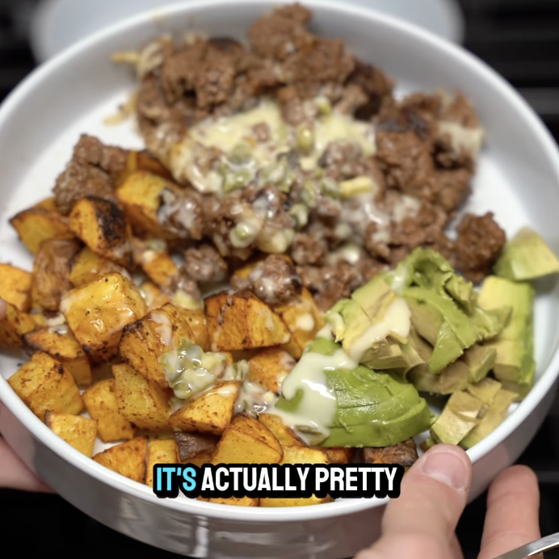

Carne Molida con Papas y Aguacate
Ingredientes:
*4 porciones
- 8 oz de carne molida 93/7
- 150 g de papas
- 28 g de queso sin grasa
- 40 g de aguacate
- 20 g de queso (dip de queso)
- Spray de aceite de aguacate
- Paprika
- Ajo en polvo
- Sal
- Condimento para tacos
- Cebolla en polvo
Instrucciones:
- Corta la papa en cubos
- Remójalas en agua fría
- Después de unos minutos, sécalas con ayuda de una servitoalla (papel de toalla). Añadeles un poco de
aceite de aguacate en spray, así como paprika, ajo en polvo, y sal
- Mandalas a la airfryer a 400° F de 15 a 18 mins
- Cuece la carne molida a fuego medio alto, usando el spray de aguacate en la sartén. Sazonar la carne
con condimento para taco, ajo y cebolla en polvo y sal
- Ya casi cocinada la carne, añade una porción de queso
- En un plato, servir papas, carne y el aguacate y añadir un poco del queso (el dip)